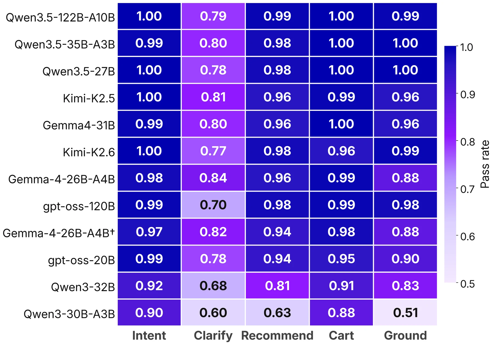

ACM RecSys 2026
The twentieth ACM Conference on Recommender Systems is the field’s premier international forum, bringing together academic researchers and industry practitioners. ICORE 2026 ranks RecSys A, defined as “Excellent.”
Published workshop paper · ACM RecSys 2026
A Reproducible Evaluation Framework
A reproducible framework for measuring how LLM shopping assistants understand intent, clarify needs, recommend products, use commerce tools, and keep their claims grounded across a multi-turn journey.
A visual walkthrough of the paper published at the Third Workshop on Agentic and Generative AI for E-Commerce, Minneapolis · 28 September 2026.
About this paper
This page unpacks the paper’s method, evidence, practical implications, and limits. The contribution is a reusable evaluation framework; the twelve-model jeans study is its controlled worked example rather than a universal ranking of shopping assistants.
The twentieth ACM Conference on Recommender Systems is the field’s premier international forum, bringing together academic researchers and industry practitioners. ICORE 2026 ranks RecSys A, defined as “Excellent.”
The third Workshop on Agentic and Generative AI for E-Commerce continues a series launched in 2024. It connects academic research with industry applications across recommendation, search, autonomous shopping agents, and trustworthy deployment.
Research in one view
The paper treats conversational commerce as one connected journey across recommendation, retrieval, dialogue, and transactions. Its framework evaluates those capabilities together while preserving the trace evidence needed to explain each score.
Freeze the catalog, opening request, system prompt, and tools. Compare models through repeated journeys and five behaviour-level scores.
See the framework 02The leading models form an overlapping band. Clarification differentiates that band, while grounding separates the wider roster.
Explore the evidence 03Teams can select models, diagnose specific weaknesses, test changes to prompts and tools, and track progress on their own catalog.
Apply the lessonsThe evaluation need
A shopping assistant operates across an evolving conversation. It interprets the customer, decides when to ask, searches a live catalog, turns retrieved evidence into recommendations, and executes cart actions faithfully.
Strong performance in one component cannot establish the quality of the complete journey. Teams need repeatable evidence that supports model selection, capability diagnosis, intervention testing, and progress tracking.
Compare candidate models on the behaviours that matter for a particular commerce experience.
Separate clarification, recommendation, grounding, and transactional failures hidden by a total score.
Measure the effect of a model, prompt, retrieval, or tool change under matched conditions.
Repeat the protocol across releases and retain the traces that explain movement in the metrics.
The framework
The catalog and customer intent enter a frozen scenario. A simulated customer interacts with the model under evaluation through the same search and cart tools. Every message, tool call, result, and action remains available for scoring and audit.
Products and real shopping queries ground the task.
The opening request and expected behaviour are frozen.
The same system prompt, search tool, and cart tool frame the interaction.
Claims, calls, results, and actions form the evidence record.
Five rubrics, repeated runs, intervals, and evaluator checks complete the protocol.
Catalog · opening message · system prompt · search and cart tools
Behaviour profile · complete trace · repeated estimates · evaluator sensitivity
Tracks the shopper’s evolving goal across the conversation.
Asks targeted questions when the request needs refinement.
Matches suggestions to the preferences the shopper expressed.
Executes and reports transactional actions faithfully.
Connects every product claim to evidence returned by a tool.
A worked shopping journey
A published paper example starts with a shopper asking for a vintage-wash denim shirt. The assistant confidently describes a shirt before searching. Its later catalog call returns jeans, leaving the original product claims unsupported.
The conversation sounds fluent. The evidence record shows intent drift, an irrelevant recommendation, and a grounding failure. Behaviour-level scoring captures the difference.
Paper example · scenario gisela_ribeiro_3 · Qwen3-30B-A3B · evaluated trace is not included in the public release
The controlled study
The primary study starts with a public Amazon Reviews 2023 jeans catalog and a query pool drawn from Semrush and Pinterest. A model-breaking filter retains twenty scenarios that expose capability differences. Every model receives the same catalog, opening message, prompt, and tools.
The scenario filter favours cases where at least one screening model fails a rubric. This construction creates a demanding comparison set. Representative deployment quality requires a separate sample of ordinary customer traffic.
Empirical findings
Aggregate scores establish broad performance bands. The five rubrics show how models arrive there, while repeated runs and bootstrap intervals show which apparent differences can support a decision.


The highest-scoring group shares overlapping confidence bands. Capability profiles and deployment constraints offer a stronger basis for selection than decimal rank.
Intent, recommendation, cart, and grounding approach saturation for several leaders under GPT-4.1. Clarification retains useful separation.
The broadest rubric spread appears in product-claim grounding, connecting model quality directly to evidence returned by commerce tools.
Models spanning more than an order of magnitude in total parameters appear in the leading band. Serving quality and behavioural fit remain consequential.
Tool-calling ablation
Across two additional models, disabling tool calling lowers total scores by 2.2–2.8 rubric passes and reduces Grounding from 0.83–0.90 to 0.06–0.16. Reliable commerce agents need access to catalog evidence, along with behaviour that uses that evidence correctly.

Dialogue resampling contributes more apparent instability than re-judging the same frozen trace. Five-run estimates reduce the risk of acting on a fortunate single conversation.
Qwen3-32B moves from rank 11 on the curated jeans study to rank 1 across three smaller categories built with a different scenario protocol. The shift demonstrates scenario sensitivity.
Cross-family arbitration reduces verdict swing from 24.5% to 9.2%. On 103 hard cells from one human rater (11 pass / 92 fail), the reliable stack reaches 88.3% accuracy, below an always-fail dummy at 89.3%; κ = 0.273 is the more informative agreement figure. GPT-4.1 is too lenient on this slice (κ = −0.13).
From evidence to practice
The controlled protocol supports choices throughout the lifecycle of a conversational commerce system. Teams can retain the scientific discipline of matched evaluation while adapting the catalog, scenarios, and success criteria to their own context.
Use capability profiles to match a model with the priorities of a deployment, including clarification quality, grounding, latency, and infrastructure constraints.
Run matched tests across changes to the model, prompt, retriever, tool schema, or orchestration layer and locate the behaviour that moved.
Keep benchmark packs as regression suites so a gain in recommendation fluency does not conceal a loss in cart correctness or grounding.
Rebuild the protocol around the products, intents, and actions that define a commerce experience, then report the resulting profile with uncertainty.
The framework turns model evaluation into an engineering feedback loop: measure the journey, inspect the trace, target the weakness, and test the change.
Interpretation and next steps
The jeans study is a deliberately difficult worked example. Its controlled construction supports diagnosis and method development. Broader deployment claims need representative traffic, matched category protocols, and deeper human validation.
Twenty model-breaking scenarios emphasize capability differences within one primary catalog. The roster reflects models available to the evaluation infrastructure at the time of the study.
The headline GPT-4.1 judge is stable yet lenient on the hard human-labelled slice. Human calibration currently covers 103 rubric cells from one reviewer.
Raw rankings depend on catalog, scenarios, prompt, tools, provider, and judge. The controlled structure and behaviour-level analysis are the transferable contribution.
A broader RAIL research programme
This paper supplies the measurement layer: it reveals where an agent succeeds or fails under controlled conditions. Related RAIL work carries that evidence forward by verifying live journey claims, exposing constrained decision traces, and adapting the interface to the customer and the interaction.
After this benchmark diagnoses journey-level weaknesses, trace invariants verify live agent claims against the state recorded by commerce systems.
Read the paper ICSR 2026 · ASIMOV · AcceptedWhere the benchmark scores outcomes, this Senka Krivic-led work adds symbolic constraints, contestability cues, and an auditable plan trace to retail assistance.
Read the public report ACII 2026 · Demo under reviewThe same evaluation discipline extends to voice and adaptive interfaces, where emotion and conversation dynamics can change the experience in real time.
Visit ACII 2026Open research resources
The public release contains the jeans catalog, twenty frozen scenarios, a minimal runner, the five-rubric judge interface, and figure data. It supports local smoke tests and new evaluations through OpenAI-compatible model and judge endpoints. The public judge is a reference implementation and does not reproduce the internal evaluation service bit for bit.
Citation
@inproceedings{vorontsov2026benchmarking,
title = {Benchmarking Models for Conversational E-Commerce:
A Reproducible Evaluation Framework},
author = {Vorontsov, Yuri and Carvalho, Diogo S. and
Vorontsov, Anastasia and Platonova, Anna and
Gorovoy, Vladimir and Briskin, Ilya and
Tseitlin, Felix and Krivic, Senka and Ahmad, Salman},
booktitle = {Proceedings of the Third Workshop on Agentic and
Generative AI for E-Commerce (GenAIECommerce 2026)},
year = {2026}
}